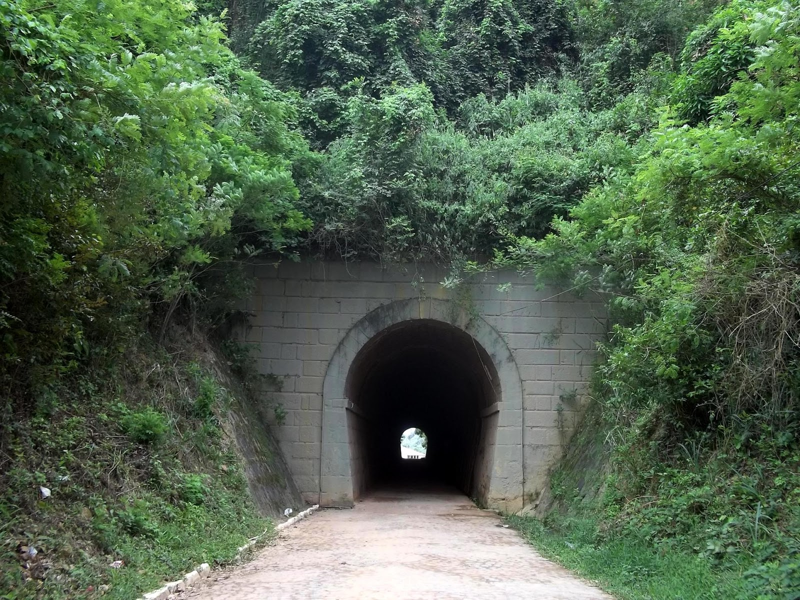

BANANEIRAS





Encravada nas colinas do Brejo Paraibano, Bananeiras é uma cidade que respira história. Fundada oficialmente em 1879, suas raízes se entrelaçam com o ciclo do café do século XIX, quando se destacou como um dos principais centros produtores da Paraíba. O legado desse período dourado pode ser sentido nas imponentes construções coloniais que pontilham seu centro histórico, como a majestosa Igreja Matriz de Nossa Senhora do Livramento. Além disso, a cidade preserva sua identidade cultural através de festas tradicionais e eventos como o Caminhos do Frio, que anualmente atraem visitantes em busca de sua rica história e beleza natural.
Localizada a aproximadamente 120 km da capital João Pessoa, Bananeiras é um destino ideal para quem busca tranquilidade, clima ameno e contato com a natureza. Durante o Caminhos do Frio, realizado entre julho e agosto, a cidade se transforma em um centro de atividades culturais, oferecendo desde apresentações artísticas até gastronomia típica e feiras de artesanato. Além de explorar seu patrimônio histórico, os visitantes podem desfrutar de trilhas ecológicas na Serra de Bananeiras e de banhos refrescantes em cachoeiras próximas. Bananeiras é, sem dúvida, um destino imperdível para quem deseja vivenciar o melhor do Brejo Paraibano.